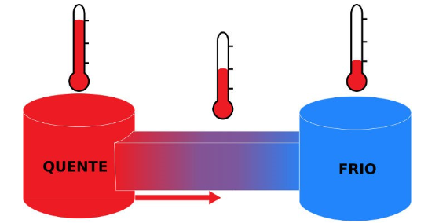

Leis da Termodinâmica
- Conceitos
- Primeira Lei
- Segunda Lei
Conteúdo deste artigo
A Termodinâmica faz parte dos estudos de Termologia e é responsável por entender os sistemas físicos, as características deles e o processo a que estão sujeitos. Se dedica a compreender a troca de calor entre corpos e a relação deles com a realização de trabalho.
Na história, essa ciência se fortaleceu devido a criação das maquinas a calor na Primeira Revolução Industrial, onde as ondas de calor e as trocas térmicas proporcionavam o funcionamento dos dispositivos.
Através das primeiras maquinas térmicas, foi necessário compreender os fenômenos por trás desse funcionamento. O fato de todas as maquinas serem movidas por combustível fóssil tornava a sua otimização uma economia de custos, sendo assim, surge a termodinâmica, como uma ciência experimental.
Ficou mais fácil aumentar a eficiência das maquinas e favorecer a lucratividade das fabricas no século XIX através das Leis Termodinâmicas.
No contexto atual, equipamentos do nosso cotidiano utilizam princípios termodinâmicos, como carros, refrigeradores, ar condicionado e geladeiras por exemplo.
A Termodinâmica descreve as propriedades macroscópicas de um sistema partindo do conceito de transformações de energia.
Conceitos
- Sistema
- Estado
- Equilíbrio
- Processo Termodinâmico
- Temperatura
- Calor
- Energia interna
- Lei 0
Um sistema termodinâmico é o conjunto de elementos que estão sendo estudados. Ele é definido por limites preestabelecidos e, nessa região, serão observados os processos energéticos.
Cada sistema possui um estado que vai determinar suas características como pressão, temperatura, volume, massa, entropia e outros. Pode haver variação de estado em diferentes intervalos de tempo.
Ao tornar-se imutável, o estado de um sistema encontra-se em uma situação de equilíbrio termodinâmico, onde não são notadas as trocas de energia ou massa, reações químicas e nem a atuação de forças externas.
Ao acontecer as trocas de energia ou transformações físico-químicas o sistema se altera, e a alteração de um estado para outro é chamado de Processo Termodinâmico.
Uma grandeza física escalar que mede a agitação nas moléculas de um determinado corpo em um momento especifico. Quanto maior a temperatura, mais agitada as partículas estão, e quanto menor essa grandeza, mais calmas elas se encontram. Sua unidade de medida padrão é o Kelvin (K). Cotidianamente, entretanto, os termômetros fornecem valores em Celsius (ºC), no Brasil; e em Fahrenheit (Fº), nos Estados Unidos da América.
Quando dois sistemas diferentes entram em contato, a energia é transferida do corpo de maior agitação molecular para aquele que possui menor grau termométrico. A energia térmica em trânsito recebe o nome de calor, medido em calorias (cal) ou joules (J).
Mensura a soma da energia cinética das partículas em um corpo, portanto, quanto maior a temperatura, maior a agitação das moléculas, maior o valor da energia cinética e maior a energia interna do sistema.
Serve como base para a construção dos termômetros. Estabelece que dois sistemas em equilíbrio térmico com um terceiro estão em equilíbrio térmico entre si. Justifica o conceito de Temperatura como sendo a propriedade que sendo igual para dois sistemas mostra que estão em equilíbrio térmico. Em termos mais práticos, para sabermos se dois sistemas possuem a mesma temperatura não é necessário coloca-los em contato térmico entre si, basta verificar se os dois estão em equilíbrio térmico através de um terceiro corpo, o termômetro. Esses dois sistemas diferentes foram colocados em contato com no outro através de uma parede imóvel, impermeável a passagem de material, mas que permite ainda a passagem de energia por calor. Quando as propriedades dos sistemas deixam de variar, eles alcançam o equilíbrio térmico. Consideremos que o sistema A está em equilíbrio térmico com o termômetro, ele indica a temperatura TA e quando o sistema B está em equilíbrio com o termômetro, se indica a temperatura TB. Então se TA = TB, os sistemas A e B estão em equilíbrio térmico entre si. 
Lei do 0: história
A lei zero da termodinâmica ganhou esta denominação por causa de Ralph H. Fowler (1889- 1944), um físico inglês. Após estudos e experiências, chegou ao postulado no século XX.
Apesar de ter formulado a base do conhecimento que envolve as trocas de calor entre os corpos, existiu a necessidade de estruturar a apresentação da lei na termodinâmica, pois a primeira e a segunda lei já faziam parte dos conceitos de termodinâmica.
Para resolver a questão, foi pensado o termo lei zero, usado pela física até os dias atuais. Fowler começou o processo de busca por respostas para a questão da sensação de frio ou calor, fenômeno que ainda gera debate e estudo no meio científico, especialmente por envolver a temperatura.
Importância da lei 0 na Termodinâmica
No mundo, existem materiais que têm alta condutividade térmica e outros com baixa condutividade. Por exemplo, o ferro e a madeira, o ferro apresenta uma condutividade bem mais elevada.
É por isso que os fósforos são de madeira. Isso garante a queima do utensílio sem que a mão possa sentir muito calor.
Com é possível observar, a humanidade precisa de um método confiável de reprodução e aferição do calor ou frio. Nesse sentido, baseados na lei zero da termodinâmica, os objetos desenvolvidos para fazer tais medidas são chamados de termômetros.
Primeira Lei
Para entender melhor a Primeira Lei da Termodinâmica, é preciso ter em mente o Princípio da Conservação das Energias, muito importante para diversas áreas da Física.
Esse princípio que rege os estudos físicos transmite a ideia de que, em um sistema termodinâmico, a energia nunca “desaparece”: ela pode ser perdida para o meio em que se encontra, absorvida ou transformada por um corpo, mas sempre se mantém na mesma quantidade.
A partir disso, a Primeira Lei da Termodinâmica ela trata de três grandes conceitos, que estão muito presentes nas máquinas térmicas: energia interna (U), trabalho (𝝉) e calor(Q).
A energia interna de um corpo é aquela que está presente no movimento e posição dos átomos e moléculas que o constituem.
Como sabemos da química, quando um corpo ganha temperatura, as partículas atômicas tornam-se mais agitadas, por isso a energia interna desse objeto estará aumentando. Do lado oposto, quando a temperatura diminui, a movimentação dos átomos diminui e a energia interna será menor.
O trabalho realizado por um corpo trata de uma transferência de energia com geração de uma força. Por exemplo, em máquinas a vapor, o trabalho resulta na movimentação dos pistões — causada pela expansão do vapor dentro do sistema.
Definição de calor: A energia em trânsito em um ambiente. Essa grandeza é estudada pela calorimetria, dada sua influência nos estados físicos de um material.
A energia interna U de um sistema é a soma das energias cinéticas e das energias potenciais de todas as partículas que formam esse sistema e, como tal, é uma propriedade do sistema. Isto significa que qualquer variação ΔU na energia interna só depende do estado inicial e do estado final do sistema no processo considerado.
A primeira Lei da Termodinâmica estabelece: se um sistema troca energia com a vizinhança por calor e por trabalho, então a variação da sua energia interna é dada por:
ΔU = Q – W
Esta lei representa a aplicação do princípio de conservação da energia a sistemas termodinâmicos.W representa a quantidade de energia transferida do sistema para a vizinhança por trabalho
Q representa a quantidade de energia transferida da vizinhança para o sistema por calor. Por isso:
W > 0: o sistema se expande e perde energia para a vizinhança.
W < 0: o sistema se contrai e recebe energia da vizinhança.
Q > 0: a energia por calor passa da vizinhança para o sistema.
Q < 0: a energia por calor passa do sistema para a vizinhança.
Embora ΔU só dependa do estado inicial e do estado final do sistema, porque representa a variação da sua energia interna, as quantidades de energia W e Q dependem, também, do processo que leva o sistema do estado inicial ao estado final.
Para discutir essa propriedade importante da energia interna vamos considerar uma amostra de gás que é levada do estado 1 para o estado 2 por três processos diferentes.
IMAGEM
Primeira Lei: história
IMAGEM
A primeira lei da termodinâmica foi anunciada por Julius Robert von Mayer em 1841. Mayer foi a primeira a verificar a transformação do trabalho mecânico em calor e vice-versa.
Essas verificações foram feitas ao mesmo tempo que Joule, mas separadamente. Ambos no século XIX.
As primeiras declarações completas da lei vieram em 1850 de Rudolf Clausius e William Rankine. A afirmação de Rankine é considerada menos diferente da de Clausius.
IMAGENS
Segunda Lei
Dentre as duas leis da termodinâmica, a segunda é a que tem maior aplicação na construção de máquinas e utilização na indústria, pois trata diretamente do rendimento das máquinas térmicas.
Dois enunciados, aparentemente diferentes ilustram a 2ª Lei da Termodinâmica, os enunciados de Clausius e Kelvin-Planck:
- Enunciado de Clausius:
- Enunciado de Kelvin-Planck
O calor não pode fluir, de forma espontânea, de um corpo de temperatura menor, para um outro corpo de temperatura mais alta.
Tendo como consequência que o sentido natural do fluxo de calor é da temperatura mais alta para a mais baixa, e que para que o fluxo seja inverso é necessário que um agente externo realize um trabalho sobre este sistema.
É impossível a construção de uma máquina que, operando em um ciclo termodinâmico,
converta toda a quantidade de calor recebido em trabalho.
Este enunciado implica que, não é possível que um dispositivo térmico tenha um rendimento de 100%, ou seja, por menor que seja, sempre há uma quantidade de calor que não se transforma em trabalho efetivo.
É impossível construir uma máquina que, operando em ciclos termodinâmicos, tenha
como
único efeito converter integralmente em trabalho todo o calor recebido.
Esse enunciado nos diz que nenhuma máquina térmica é capaz de transformar em trabalho todo o calor que recebe.